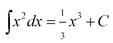
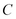
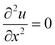
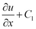
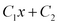

|
Boundary Conditions |

  
|
|
Boundary Conditions |
|
A fundamental component of any partial differential equation system is the set of boundary conditions, which alone make the solution unique. The boundary conditions are analogous to the integration constants that arise in integral calculus. We say , where  is any constant. If we differentiate the right hand side, we recover the integrand, regardless of the value of C.
In a similar way, to solve the equation , we must integrate twice. The first integration gives , and the second gives. These integration constants must be supplied by the boundary conditions of the problem statement.
It is clear from this example that there are as many integration constants as there are nested differentiations in the PDE. In the general case, these constants can be provided by a value at each end of an interval, a value and a derivative at one end, etc. In practice, the most common usage is to provide either a value or a derivative at each end of the domain interval. In two or three dimensions, a value or derivative condition applied over the entire bounding curve or surface provides one condition at each end of any coordinate integration path.
Page url: index.html?boundary_conditions.html